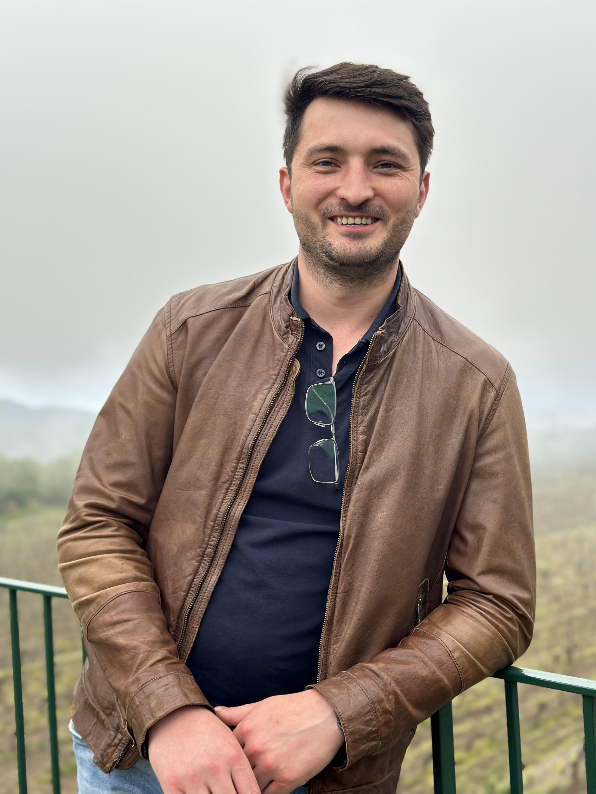
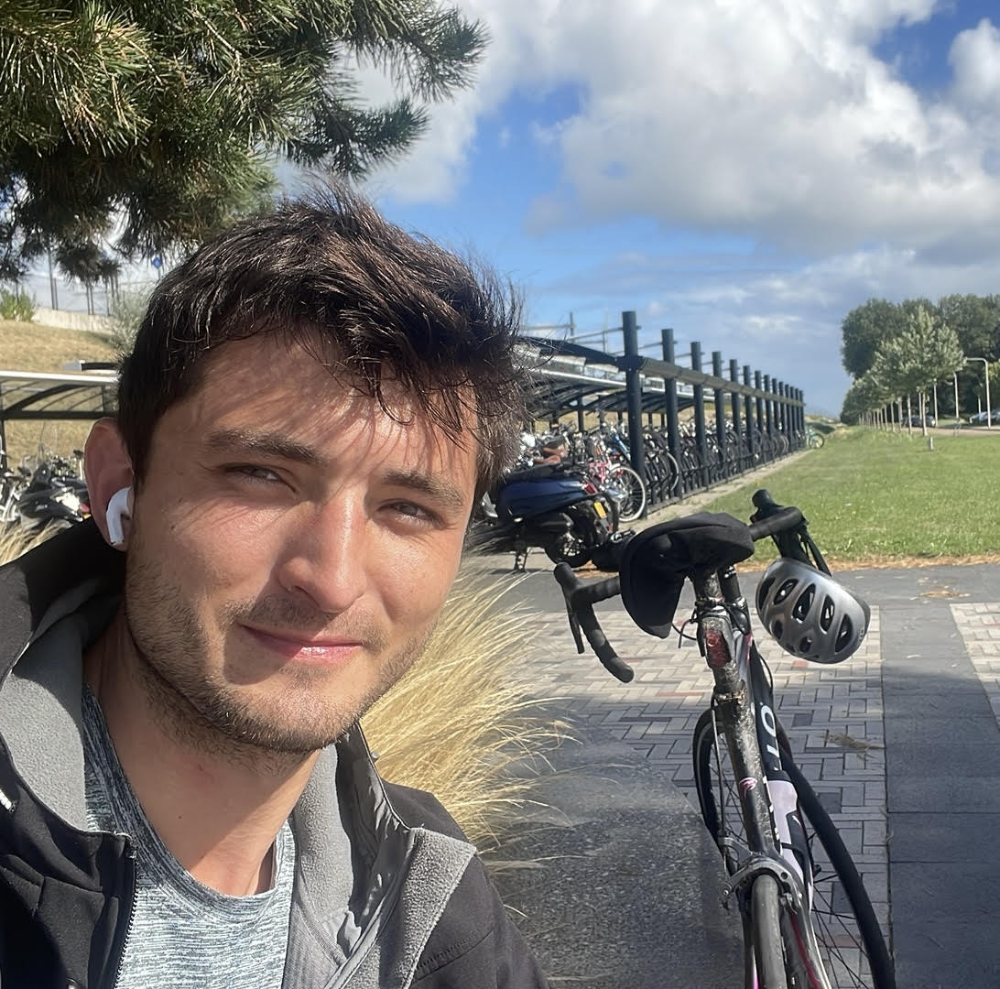
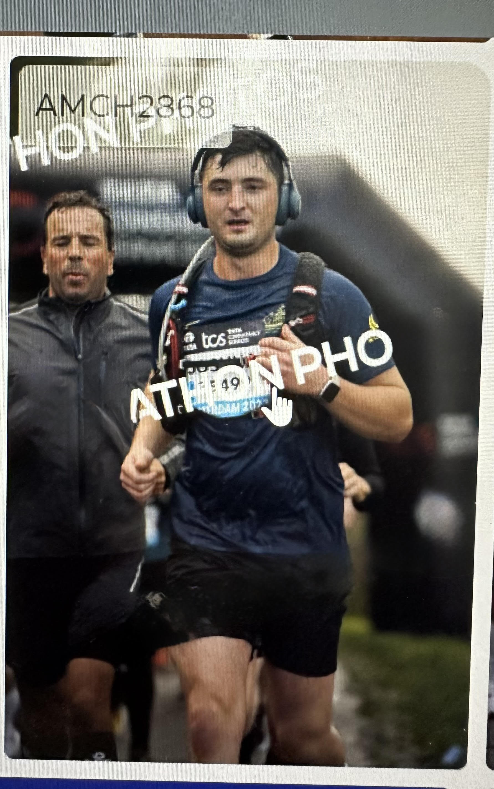

Van IT Sales naar IT Development - Een Reis van Groei en Ontdekking
  Hallo! Ik ben Joshua Boermans, een 29-jarige IT-professional uit Hoofddorp die momenteel een spannende carrièretransitie doormaakt. Na meer dan 5 jaar ervaring in IT-sales bij startups en multinationals, heb ik besloten om mijn passie voor technologie een stap verder te brengen door over te stappen naar IT-development.
Wat begon als nieuwsgierigheid naar de technische kant van de producten die ik verkocht, is uitgegroeid tot een echte passie voor programmeren, systeembeheer en IT-innovatie. Ik geloof in levenslang leren en ben nu bezig met het opbouwen van mijn technische vaardigheden om deze nieuwe uitdaging aan te gaan.
Begonnen bij XcellerateLabs waar ik werkte met cloud-native startups, gevolgd door rollen bij Trusted Shops (e-commerce security) en NCC Group (software escrow services). Als medeoprichter van UNIT heb ik hands-on ervaring opgedaan met low-code development en business automation.
Momenteel volg ik een intensieve IT-bootcamp bij BEE-Organisation waar ik me specialiseer in front-end en back-end development, virtual machines, en network management. Het is hier dat ik mijn sterke affiniteit voor Python en virtualisatie technologieën ontdekte.
Ik vind rust en uitdaging in het wielrennen. Het helpt me om gefocust te blijven en doelen te stellen, vaardigheden die ook waardevol zijn in mijn IT-carrière.
Het oplossen van praktische problemen thuis helpt me om analytisch te blijven denken - een vaardigheid die perfect aansluit bij programmeren en troubleshooting.
Muziek brengt creativiteit en discipline samen. Het helpt me om in balans te blijven en een andere vorm van logisch denken te ontwikkelen.
Het ontdekken van nieuwe culturen en plekken heeft me geleerd om adaptief en open-minded te zijn - essentiële eigenschappen in de snel veranderende IT-wereld.
Mijn doel is om binnen de IT-sector een rol te vinden waar ik kan groeien van junior naar ervaren professional. Ik zoek specifiek naar bedrijven die interne trainingen aanbieden, omdat ik geloof dat dit de beste manier is om praktijkervaring op te doen terwijl ik mijn technische kennis verder ontwikkel.
Verder ontwikkelen van mijn Python vaardigheden
Expertise opbouwen in VM's en network management
Blijven leren en groeien in de IT-sector